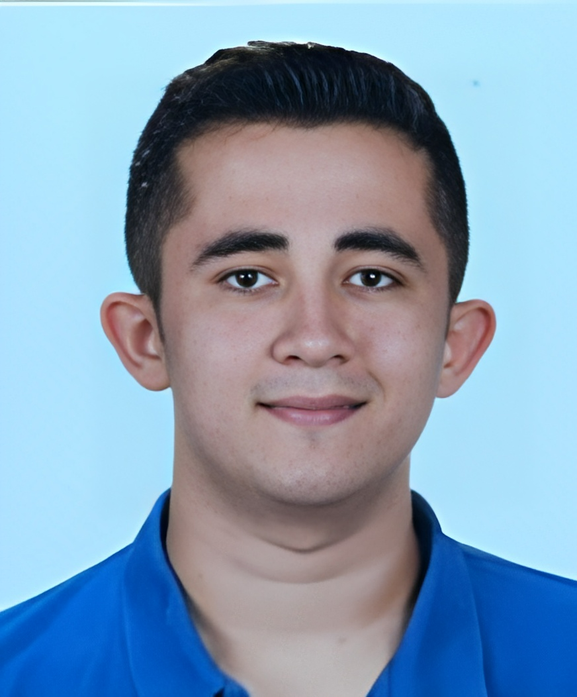

Summary
I am a hardworking, patient, and research-loving
person who graduated from Computer Engineering
and Business Administration double major.
Education
- High School - Istanbul Atatürk High Science School
- University (Main Major) - Koç University Computer Engineering
- University (Double Major) - Koç University Business Administration
Work Experience
- Fibabanka - Big Data and MLOps Intern
- OBSS - Java Development Intern
- Insumo - Q&A Test Engineer Intern
- Aktek Bilişim - Strategy Planning and Business Development Intern
- Aktek Bilişim- Software Engineer Intern
Skills
- Java
- Python
- Flask Web Framework
- HTML
- CSS
- Design Patterns
Contact Information
Hobbies